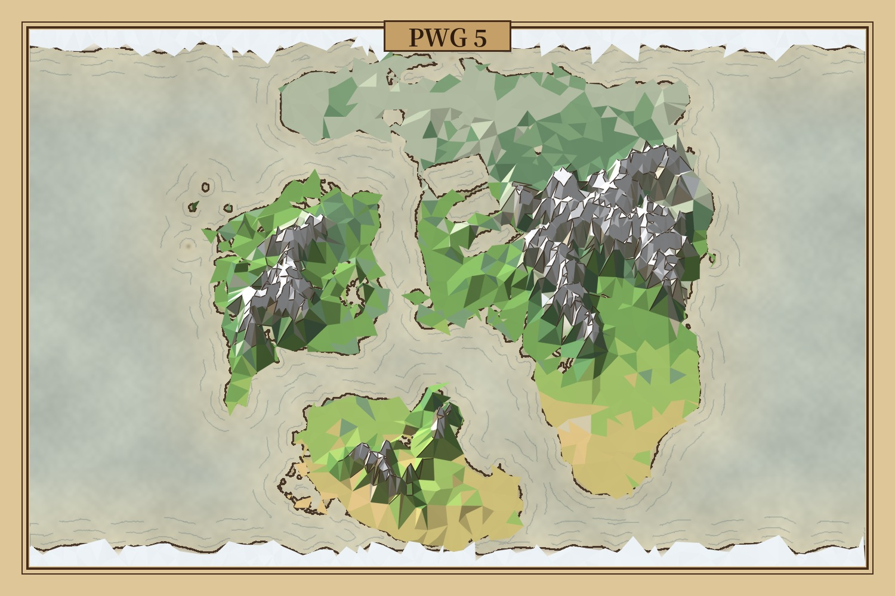
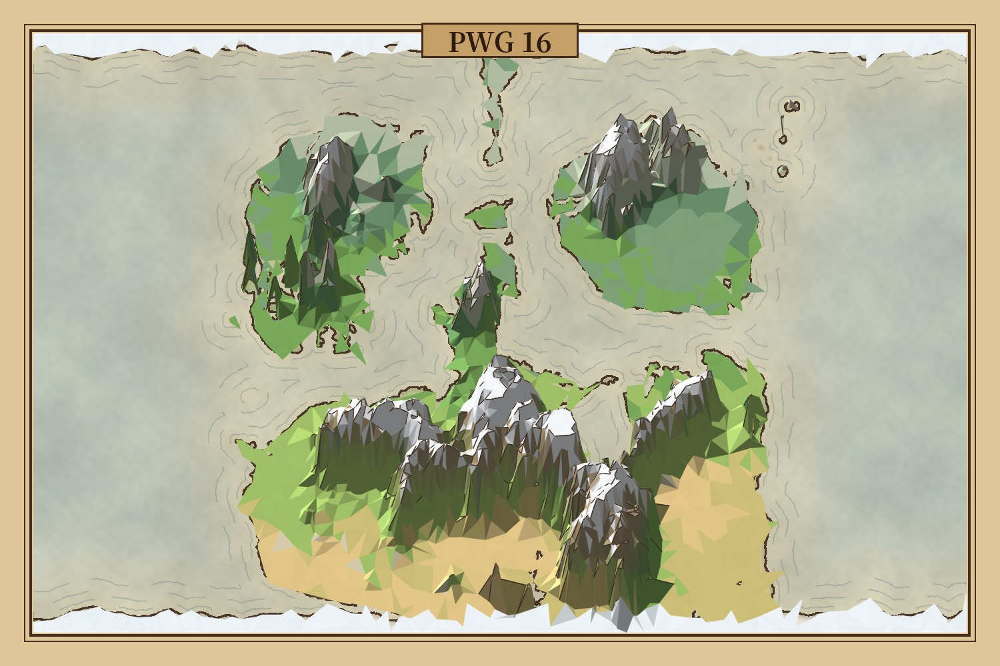
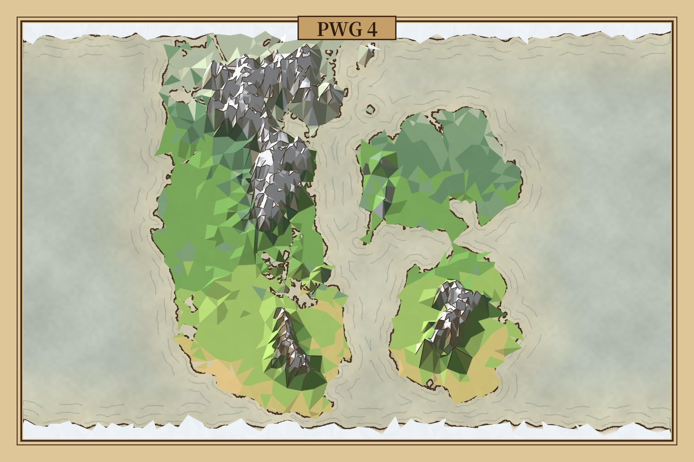

地図全体をゆるい3Dにして、山を少し強調する(11-20)
概要: mapstyle37の山は、頂上が大きな平らな面になり、台地のように見えました。原因は、頂を広げる処理(周り13ピクセルの最大値を取る)で、尖った頂が平らな台になることだと見ています。そこでユーザー案に従い、最大値の処理をやめ、地図全体を軽くならした高さでゆるく盛り上げ、高い山が集まる所だけを少し強調しました(同じ5世界・同じ色と陰)。
変えた点
- 全体: 高さを軽くならして(幅2.5ピクセル)、低い起伏からゆるく盛り上げる。
- 強調: 「高い所(上位半分)が集まっている度合い」が高い場所の、高い部分だけ。高さが最大約2倍になる。
- 道具:
mapstyle/tools/lowpoly.py(環境変数 FM_LP_GENTLE=1 で有効)。
PWG seed7: 左=前(mapstyle37) / 下=今回
 絵番号 E154
絵番号 E154
 絵番号 E159
絵番号 E159
PWG seed5: 左=前(mapstyle37) / 下=今回
 絵番号 E155
絵番号 E155

絵番号 E160
PWG seed16: 左=前(mapstyle37) / 下=今回

絵番号 E156
 絵番号 E161
絵番号 E161
PWG seed4: 左=前(mapstyle37) / 下=今回
 絵番号 E157
絵番号 E157

絵番号 E162
PWG seed1: 左=前(mapstyle37) / 下=今回
 絵番号 E158
絵番号 E158
 絵番号 E163
絵番号 E163
目で見た評価(各1枚)
- 頂上の台地は消えた。稜線はぎざぎざの尾根になり、雪も尾根の上に細く付く。
- 地図全体が低く平らになり、前よりおとなしい。山が単独で立つ所(前に尖って良かった峰)は目立たなくなった。
- 山の集まる所は、山脈として一つにまとまって見える。
- 強調の強さ(約2倍)は、まだ決めていない。強すぎ・弱すぎの判断をいただきたい。
限界・未確認
- 5個とも各1枚・目視のみ。iPhoneでの見え方は未測定。
- 強調の範囲(集まりの判定)の数字は、1回の試しで決めた初期値。
- 湖の形が四角い淡い面になる癖(粗い面を湖に当てる所)は、前から残っている。
次: 強調の強さと範囲を、ユーザーの判断で調整する。